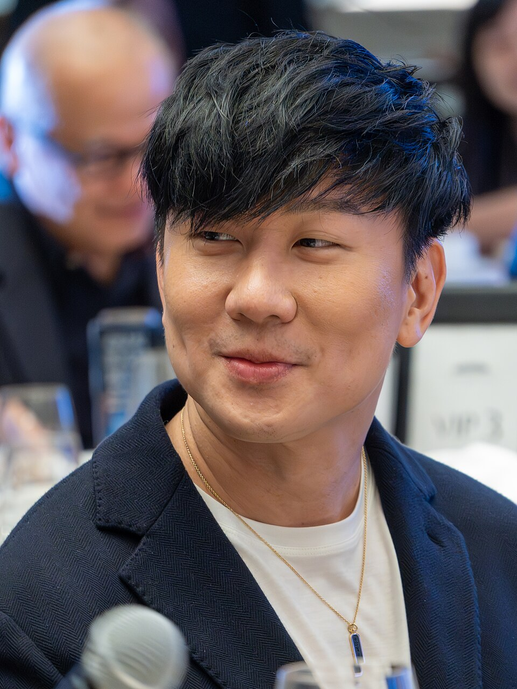
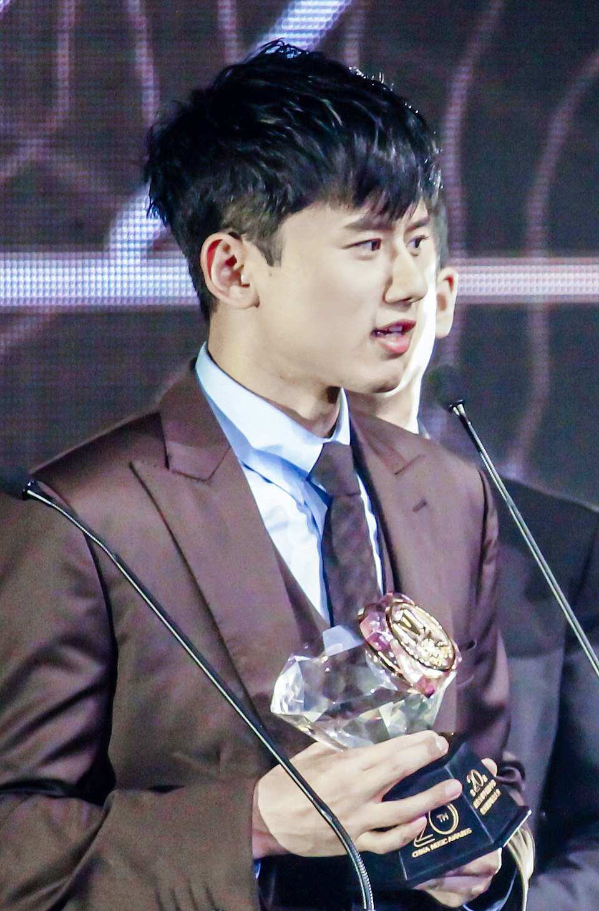
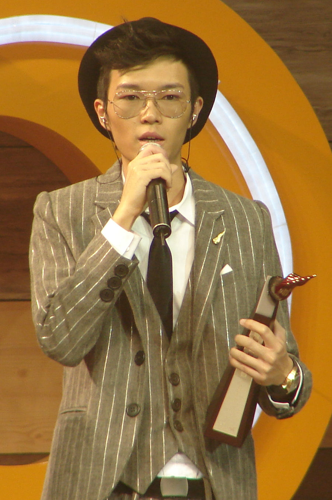
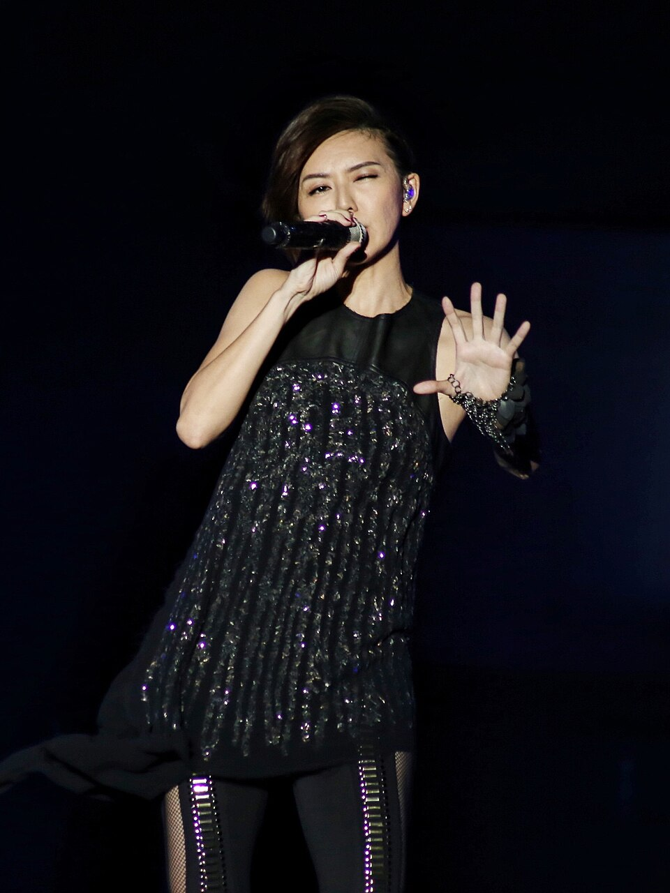
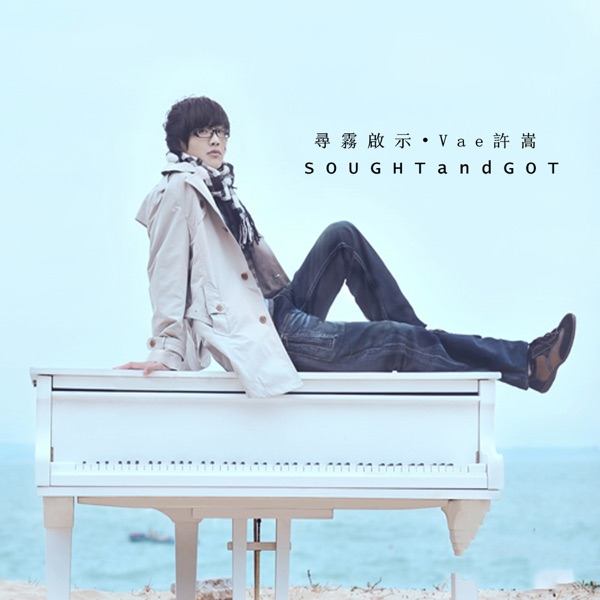
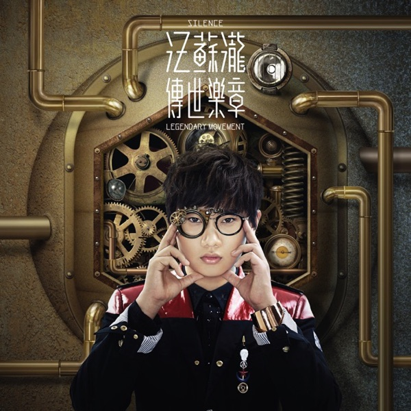
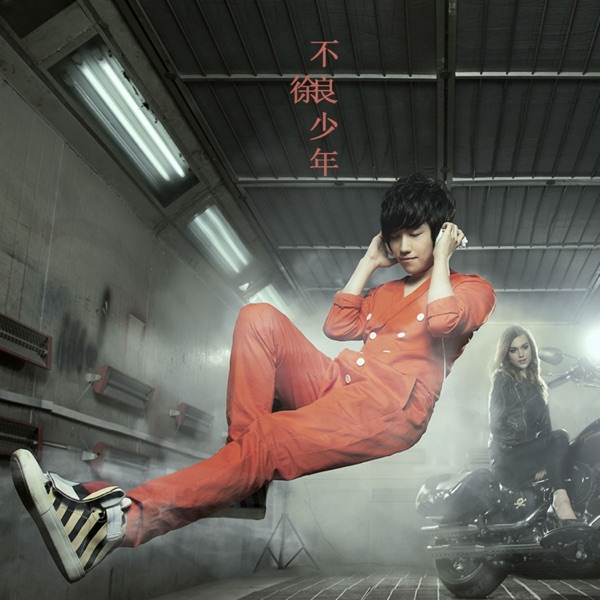
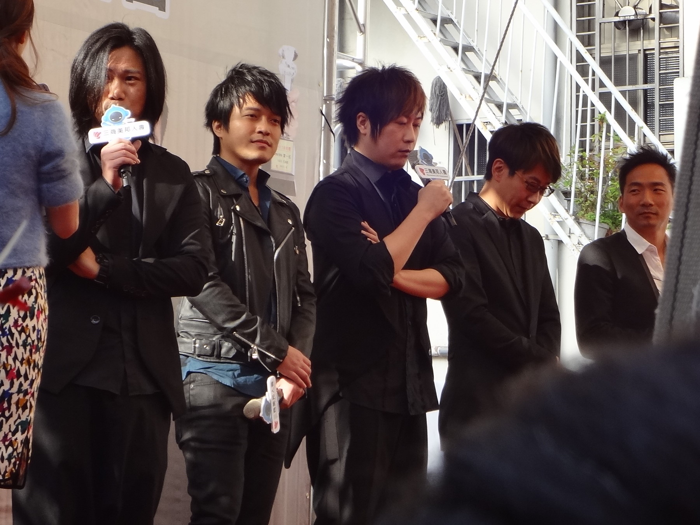
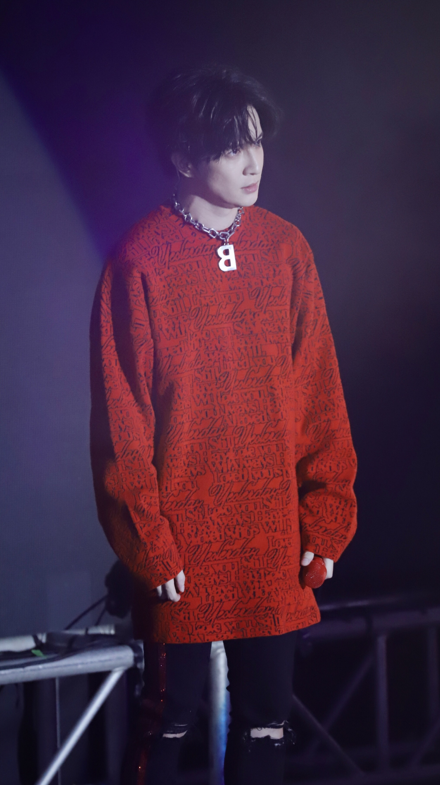
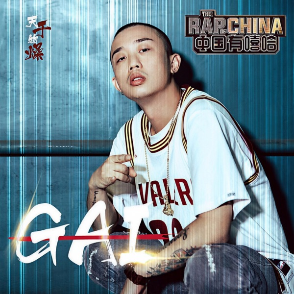

Get to know the voices that defined and continue to shape Chinese pop music — their stories, styles, and standout tracks.
Jay Chou
周杰伦
Born in Taiwan in 1979, Jay Chou is widely regarded as the "King of Mandopop." He revolutionized Chinese pop by blending classical Chinese instrumentation with Western R&B, hip-hop, and rock. His unique mumbling vocal style was initially controversial but became his signature.
PopR&BHip-HopTaiwan
Must-Listen Tracks
Rice Field (稻香) — Upbeat harvest anthem
Blue and White Porcelain (青花瓷) — Chinese-style elegance
Nocturne (夜曲) — Dark, cinematic R&B
Silence (安静) — Heartbreak ballad classic
Nunchucks (双截棍) — Martial-arts hip-hop
Wang Leehom
王力宏
Chinese-American musician known for his groundbreaking East-meets-West fusion of Chinese traditional music with pop, hip-hop, and R&B. A multi-instrumentalist and Berklee-educated artist, Leehom pushed the boundaries of what Mandopop could be.
PopR&BFusionChinese-American
Must-Listen Tracks
The Only One (唯一) — Timeless love ballad
Heroes of Earth (盖世英雄) — East-meets-West fusion anthem
Things You Don't Know (你不知道的事) — From the film "Love in Disguise" (恋爱通告)
Wrong in the Flower Field (花田错) — Peking opera meets pop
Falling Leaves Return to Roots (落叶归根) — Cultural identity ballad

JJ Lin
林俊杰
Born in Singapore, JJ Lin is one of the most gifted vocalists and songwriters in Mandopop. His music combines pop, R&B, electronic, and classical elements. Known for his incredible vocal range and emotional delivery, he has won multiple Golden Melody Awards.
PopBalladSingapore
Must-Listen Tracks
South of the River (江南) — Dreamy pop masterpiece
Practice Love (修炼爱情) — Emotional ballad
If Only (可惜没如果) — Bittersweet regret
A Song for No One (不为谁而作的歌) — Award-winning track
Right Time, Right Person (对的时间对的人) — Beautiful love song
David Tao
陶喆
Often called the "Godfather of Chinese R&B," David Tao brought American soul, jazz, and R&B sensibilities to Mandopop. His self-titled debut album in 1997 was groundbreaking, introducing a smoother, groovier sound to Chinese-language music.
R&BSoulJazzTaiwan
Must-Listen Tracks
Regular Friends (普通朋友) — Classic heartbreak R&B
Love is Simple (爱很简单) — Smooth, soulful ballad
Secret Weapon (杀手锏) — Funky groove
Ghost (鬼) — Edgy rock-R&B crossover
The Moon Represents My Heart (月亮代表谁的心) — Teresa Teng tribute

Jason Zhang
张杰
Rising to fame through Chinese talent shows, Jason Zhang is celebrated for his powerful high notes and energetic performances. He won the International Artist of the Year at the American Music Awards in 2014, bringing global attention to Chinese pop.
PopPower BalladMainland China
Must-Listen Tracks
Chasing Light (逐光) — Inspirational anthem
The World (天下) — Epic, cinematic pop
After Tomorrow (明天过后) — Romantic ballad
This is Love (这就是爱) — Sweet love song
Young China (少年中国说) — Patriotic pop
G.E.M.
邓紫棋
Gloria Tang, known as G.E.M. (Get Everybody Moving), is a Hong Kong singer-songwriter who gained massive popularity through the TV show "I Am a Singer." Known for her explosive vocal power and genre-blending pop, she is one of the biggest female artists in Chinese music.
PopPower VocalHong Kong
Must-Listen Tracks
Light Years Away (光年之外) — Sci-fi pop anthem from Passengers
Together No Matter How Far (多远都要在一起) — Heartfelt love anthem
Where Did U Go — Bilingual pop banger
Full Stop (句号) — Fierce, empowering break-up declaration
A.I.N.Y. — Bilingual pop classic

Khalil Fong
方大同
A Hong Kong-based singer-songwriter who brought authentic R&B, neo-soul, and jazz to Mandopop. Influenced by Stevie Wonder and D'Angelo, Khalil Fong's music stands out for its organic instrumentation and warm, textured vocals.
R&BNeo-SoulJazzHong Kong
Must-Listen Tracks
Trip for Three (三人游) — Tender, jazzy ballad
Love Love Love (爱爱爱) — Catchy soul-pop
Red Bean (红豆) — Beautiful Faye Wong cover
Someone Special (特别的人) — Heartfelt love song
Monkey King (悟空) — From the album "Journey to the West"
Eason Chan
陈奕迅
A Hong Kong legend equally acclaimed in Cantopop and Mandopop. Eason Chan is known for his deeply emotional voice and incredible versatility. He has won numerous awards and is considered one of the greatest Chinese-language singers of all time.
PopBalladCantopopHong Kong
Must-Listen Tracks
Ten Years (十年) — Iconic Mandarin ballad
Long Time No See (好久不见) — Nostalgic classic
Steady Happiness (稳稳的幸福) — Warm and uplifting
Lonely Patient (孤独患者) — Emotional masterpiece
Exaggeration (浮夸) — Dramatic Cantopop classic

Stefanie Sun
孙燕姿
A Singaporean singer whose warm, crystalline voice defined early 2000s Mandopop. Stefanie Sun's debut was a massive success, and she quickly became one of the top-selling female artists in Asia. Her songs are known for their youthful energy and emotional sincerity.
PopBalladSingapore
Must-Listen Tracks
Cloudy Day (天黑黑) — Debut classic
Encounter (遇见) — Iconic film soundtrack
Green Light (绿光) — Upbeat pop anthem
What I Miss (我怀念的) — Emotional ballad
Kite (风筝) — Metaphorical love song

Xu Song (Vae)
许嵩
Born in Hefei in 1986, Xu Song — known online as "Vae" — is the undisputed king of Chinese internet music. He writes, composes, arranges, produces, and sings all his own songs. His poetic lyrics and "Chinese style" indie pop earned him millions of fans before ever signing with a label.
Rain on Qingming (清明雨上) — Elegant classical imagery
If Back Then (如果当时) — Nostalgic love ballad

Silence Wang
汪苏泷
Born in Shenyang in 1989, Silence Wang is one of the "Internet Big Three" (网络三巨头). A self-taught musician who started by posting original songs online, he quickly became a campus sensation. His catchy melodies and sweet vocal style made him a favorite in KTV rooms across China.
Internet PopSweet PopMainland China
Must-Listen Tracks
Little Star (小星星) — Viral modern nursery rhyme
Love Without Breaking Up (不分手的恋爱) — QQ Music #1 hit
A Little Sweet (有点甜) — Sweet duet with BY2
No More Reunion (后会无期) — Bittersweet farewell anthem
Good Night (晚安) — Tender late-night ballad

Xu Liang
徐良
Born in 1987, Xu Liang is the third member of the "Internet Big Three." Known for his quirky, playful duets with female singer Xiao Ling, Xu Liang's songs blended catchy hooks with edgy, club-influenced production. His music dominated QQ Music charts and campus karaoke in the early 2010s.
Internet PopDuetMainland China
Must-Listen Tracks
No Can Do, Sir (客官不可以) — Playful, iconic hit
Bad Girl (坏女孩) — Edgy club-pop banger
No More Reunion (后会无期) — Collab with Silence Wang
Rain Back Then (那时雨) — Nostalgic slow ballad
Exams Can Go to Hell (考试什么的都去死吧) — Campus comedy anthem

Mayday
五月天
Taiwan's biggest rock band, formed in 1997. Mayday blends pop-rock anthems with deeply emotional lyrics about youth, friendship, and perseverance. Their stadium concerts draw hundreds of thousands of fans across Asia. Lead singer Ashin's vocals and songwriting define a generation.
RockPop-RockTaiwanBand
Must-Listen Tracks
Tenderness (温柔) — Defining 2000s rock ballad
Suddenly Missing You (突然好想你) — Emotional reunion anthem
Salted Fish (咸鱼) — Inspirational underdog song
I Won't Let You Be Alone (我不愿让你一个人) — Tender love promise
Sad People Shouldn't Listen to Slow Songs (伤心的人别听慢歌) — Ironic up-tempo heartbreak
Li Ronghao
李荣浩
Born in Bengbu in 1985, Li Ronghao is one of mainland China's most talented singer-songwriters and producers. Known for his distinctive small-eyed look and warm, smoky voice, he writes, composes, and produces nearly all of his own music. His debut single "Model" became an instant classic.
PopSinger-SongwriterMainland China
Must-Listen Tracks
Model (模特) — Smoky, philosophical debut hit
Li Bai (李白) — Catchy tribute to the Tang poet
No Settling (不将就) — Film theme from "He Yi Sheng Xiao Mo"
Young and Worthy (年少有为) — Nostalgic ballad about youth
Sparrow (麻雀) — Tender metaphor about ordinary life

Joker Xue
薛之谦
Born in Shanghai in 1983, Joker Xue is one of China's most popular singer-songwriters. After years of setbacks, his comeback single "Actor" went viral in 2015, making him a household name. Known for his witty personality and heartfelt ballads, he dominates Chinese streaming charts.
PopBalladMainland China
Must-Listen Tracks
Actor (演员) — Viral comeback mega-hit
Ugly Monster (丑八怪) — Self-deprecating love song
Just Right (刚刚好) — Bittersweet breakup anthem
Nice to Meet You (认识你真好) — Warm friendship ballad
It's Raining (下雨了) — Melancholy classic
MC HotDog
热狗
One of the founding fathers of Chinese-language rap. Known for his raw, satirical lyrics about everyday life and society, MC HotDog brought underground hip-hop to mainstream audiences in Taiwan and beyond.
RapHip-Hop
Must-Listen Tracks
Mr. Almost (差不多先生) — Satirical anthem about settling for mediocrity
Let Me Go (离开) — Emotional rap ballad about moving on
My Life (我的生活) — Honest look at everyday life
Korean Girl (韩流来袭) — Humorous take on pop culture trends
Without Her (没有她) — Heartfelt storytelling rap
Wilber Pan
潘玮柏
Chinese-American rapper and singer who helped bring hip-hop into the Mandopop mainstream. With lyrics by Fang Wenshan and production bridging East and West, Wilber Pan made rap accessible and fun for a new generation of listeners.
RapPopHip-Hop
Must-Listen Tracks
Gecko Walk (壁虎漫步) — Signature debut rap single with Fang Wenshan lyrics
Tell Me — Bilingual R&B-rap crossover hit
Happy Worship (快乐崇拜) — High-energy duet with Jolin Tsai
On Your Side (站在你这边) — Composed by Jay Chou
Coming of Age (Coming Home) — Emotional growth anthem

GAI
GAI周延
Chongqing-born rapper who won The Rap of China Season 1, bringing Chinese hip-hop to national prominence. Known for blending Sichuan dialect, traditional Chinese musical elements, and hard-hitting rap flows into a unique style.
RapHip-HopTrap
Must-Listen Tracks
Dry and Hot (天干物燥) — The Rap of China breakout hit
China (华夏) — Patriotic rap celebrating Chinese culture
Hotpot Base (火锅底料) — Spicy Chongqing anthem
The Ascetic (苦行僧) — Introspective street poetry
White Dove (白鸽) — Powerful ballad rap from Singer 2025